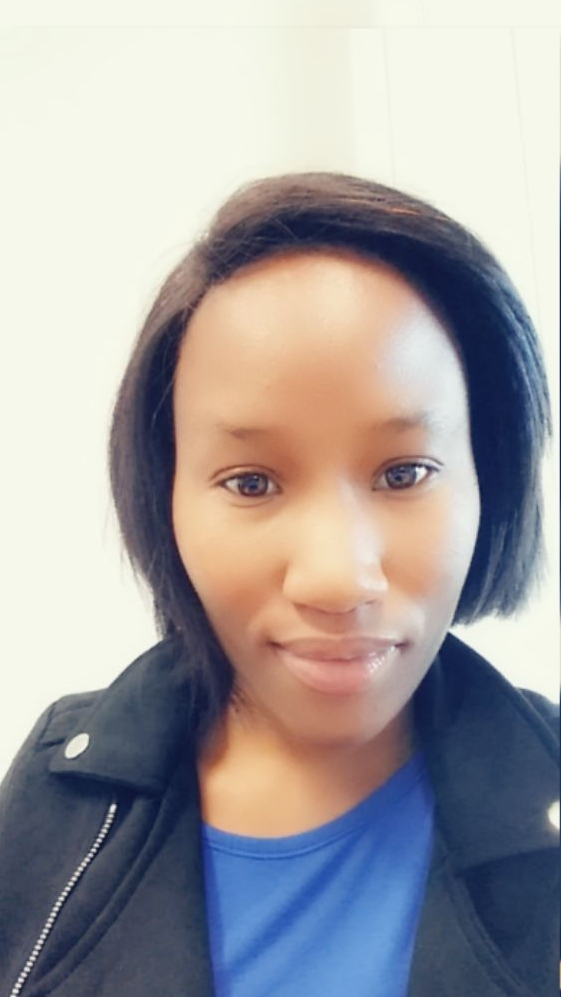

THATO ANGELINE KWEETSANE
Aspiring web App Developer ICT graduate
Thato is young lady aspiring to be one of the greatest web designer and developer.
THATO's EDUCATION
Thato completed her Diploma in Information and
Communication Technology in 2018,at Sol Plaatje University majoring in
Application Development.
Thato completed her matric at Dikgatlhong High School
Her major subject were
Physical Science,Mathematics and Life Sciences.
THATO's SKILLS
- HTML5
- Css
- Php
- Ionic
- Angular
THATO'S HOBBIES AND INTEREST
Thato likes reading in her spare time.
she loves spending most of her time with her family.
Thato has a curious and strong mind,which she spends most her time online reading articles
and doing research.